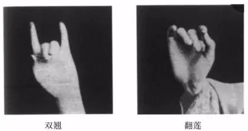

2016年北京市中考语文试题 · 现代文阅读 第8、9、10题
四、现代文阅读（共31分）
8．（11分）阅读下面材料，完成下列各题
【材料一】
京剧是流行全国的戏曲剧中之一。自清乾隆五十五年起，四大徽班陆续进京演出，他们相互影响，并接受昆区和秦腔的部分剧目、曲调、表演方法，又吸收了一些民间曲调，就是在这样的融合、演变和发展中京剧逐渐形成。在京剧发展的历程中，产生过许多优秀的演员。早期有“老生三杰”程长庚、余三胜、张二奎；光绪年间，有被称为“伶界大王”的谭鑫培；之后，又有“武生泰斗”杨下楼，“四大名旦”梅兰芳、尚小云、程砚秋、苟慧生，等等，可谓 ①．在一代又一代的传承中，他们不断创新，在表演、音乐、剧本等诸多方面均大胆变革，将京剧推向新的高度。二十世纪初，京剧京剧繁荣期，出现了 ②的繁盛局面。旦行有梅（兰芳）派、尚（小云）派、程（砚秋）派、荀（慧生）派，生行有余（叔岩）派、马（连良）派，净行有金（少山）派、郝（寿臣）派……京剧至今已有二百多年的历史，堪称“国粹”，并被联合国教科文组织列入“人类非物质文化遗产代表作名录”。
【材料二】
梅兰芳出身于梨园世家，是中国京剧表演艺术大师。他创立了“梅派”艺术，在唱腔、念白、表演等各个方面都有极强造诣。梅兰芳在继承传统唱腔的基础上，创造出大量新颖的唱腔，因其所创唱腔符合剧中人物的情感，以情带声，深受观众喜爱。梅兰芳的念白，是艺术化的生活语言，毫无刻意求工的感觉。无论韵白还是京白，他都注意清晰动听和情感真实。在表演上，梅兰芳借用了昆曲的表情、身段和步法，丰富了京剧的舞台表现力。在《霸王别姬》《贵妃醉酒》《宇宙锋》等剧目中，他通过手、眼、身、步的表演和配合，塑造出许多完美的舞台形象。梅兰芳尤其注重手的艺术表现。过去老一辈的旦角表演，都较少露出手来。梅兰芳在所编演的新戏及经过整理的传统剧目中，有大量的露手表演，通过不同手势的运用，表达出喜、怒、哀、乐的复杂情感。他曾经创造、发展了许多手势，这些手势都是结合角色的思想感情有目的地设计出来的。梅兰芳生前曾多次出国访问演出，是将中国的京剧艺术推向世界舞台的艺术家。
（1）在【材料一】的①②两处，依次填入词语，最恰当的一项是
A．人才云集 百家争鸣 | B．人才云集 流派纷呈 |
C．名家辈出 百家争鸣 | D．名家辈出 流派纷呈 |
（2）下面是梅兰芳纪念馆中的“兰花指”展板，结合【材料二】，请你说出纪念馆布置这块展板的目的是什么。
（3）综合上面两则材料可以看出，无论是国粹京剧，还是梅派艺术，都是在 和 的过程中逐步成熟起来的。（每空限2个字）
（4）梅兰芳在《霸王别姬》中扮演虞姬。下面两幅图片是虞姬在听到楚歌后使用的手势，请结合【链接材料】的内容，简要说明梅兰芳使用两个手势共同表达了虞姬怎样的情感。

【链接材料】
项王①军壁垓下②，兵少食尽，汉军③及诸侯兵围之数重。夜闻汉军四面皆楚歌④，项王乃大惊曰：“汉皆已得楚乎？是何楚人之多也！”项王则夜起，饮帐中。有美人名虞，常幸从⑤；骏马名骓⑥，常骑之。于是项王乃悲歌慷慨，自为诗曰：“力拔山兮气盖世，时不利兮骓不逝⑦．骓不逝兮可奈何，虞兮虞兮奈若何⑧！”歌数阕⑨，美人和之。项王泣数行下，左右皆泣，莫能仰视。
选自《史记•项羽本纪》
注：①【项王】指西楚霸王项羽。②【垓下】地名，西楚霸王项羽与汉王刘邦为争夺天下在此决战。③【汉军】指刘邦的军队。④【夜闻汉军四面皆楚歌】（项王）夜晚听到汉军在四面唱起了楚歌。⑤【幸从】受到宠爱而跟随在身边。⑥【骓】念zuī．⑦【逝】奔驰。⑧【奈若何】（我）将你怎么安排啊！⑨【歌数阕】连唱几遍。
9．（11分）阅读《沙枣》，完成下列各题
沙枣
梁衡
记得我刚从北京来到河套时就对沙枣这种树感到奇怪。1968年冬，我大学毕业后分到内蒙古临河县，头一年在大队劳动锻炼。我们住的房子旁是一条公路，路边长着两排很密的灌木丛，也不知道叫什么名字。第二年春天，柳树开始透出了绿色，接着杨树也发出了新叶，但这两排灌木却没有一点表示。我想大概早已干死了，也不去管它。
后来不知不觉中这灌木丛发绿了，叶很小，灰绿色，较厚，有刺，并不显眼，我想大概就是这么一种树吧，也并不十分注意。只是在每天上井台担水时，注意别让它的刺钩着我的袖子。
6月初，我们劳动回来，天气很热，大家就在门前空场上吃饭，这时隐隐约约飘来一种花香。我一下就想起在香山脚下夹道的丁香，清香醉人。但我知道这里是没有丁香树的。到晚上，月照窗纸，更是香浸草屋满地霜。当时很不解其因。
第二天傍晚我又去担水，照旧注意别让枣刺刮着胳膊，这才发现，原来香味是从这里发出的。真想不到这么不起眼的树丛能发出这么醉人的香味。从此，我开始注意沙枣。
认识的深化还是第二年春天。那是4月下旬，我参加了县里的一期党校学习班。党校院里有很大的一片沙枣林，房前屋后也都是沙枣树。学习直到6月9日才结束。这段时间正是沙枣发芽抽叶、开花吐香的时期，我仔细地观察了全过程。
沙枣的外表极不惹人注意，叶虽绿但不是葱绿，而是灰绿；花虽黄，但不是深黄、金黄，而是淡黄；个头很小，连一般梅花的一个花瓣大都没有。它的幼枝在冬天时为灰色，发干，春天灰绿，其粗干却无论冬夏都是古铜色。总之，色彩是极不鲜艳引人的，但是它却有极浓的香味。我一下想到鲁迅说过的，牛吃进去的是草，挤出来的是奶，它就这样悄悄地为人送着暗香。当时曾写了一首小词记录了自己的感受：
干枝有刺，
叶小花开迟。
沙埋根，风打枝，
却将暗香袭人急。
1972年秋天，我已调到报社，到杭锦后旗的太荣大队去采访，又一次见识了沙枣的壮观。
这个大队紧靠乌兰布和大沙漠，为了防止风沙的侵蚀，大队专门成立了一个林业队，造林围沙。十几年来，他们沿着沙漠的边缘造起了一条20多里长的沙枣林带，沙枣林带的后面又是柳、杨、榆等其他树的林带，再后才是果木和农田。我去时已是秋后，阴历十月了。沙枣已经开始落叶，只有那些没有被风刮落的果实还稀疏地缀在树上，有的鲜红鲜红，有的没有变过来，还是原来的青绿，形状也有滚圆的和椭圆的两种。我们摘着吃了一些，面而涩，倒也有它自己的味道，小孩子们是不会放过它的。当地人把它打下来当饲料喂猪。在这里，我才第一次感觉到了它的实用价值。
首先，长长的沙枣林带锁住了咆哮的黄沙。你看那浩浩的沙海波峰起伏，但一到沙枣林前就止步不前了。沙浪先是凶猛地冲到树前，打在树干上，但是它立即被撞个粉碎，又被风卷回去几尺远，这样，在树带下就形成了一个几尺宽的无沙通道，像有一个无形的磁场挡着，沙总是不能越过。而高大的沙枣树带着一种威慑力量巍然屹立在沙海边上，迎着风发出豪壮的呼叫。沙枣能防风治沙，这是它最大的用处。
沙枣还有顽强的生命力。一是抗旱力强，无论怎样干旱，只要插下苗子，就会茁壮生长，虽不水嫩可爱，但顽强不死，直到长大。二是能自卫，它的枝条上长着尖尖的刺，动物不能伤它，人也不能随便攀折它。正因为这点，沙枣林常被栽在房前屋后当墙围，或在地边护田。三是它能抗盐碱。它的根扎在白色的盐碱土上，枝却那样红，叶却那样绿。因为有这些优点，它在严酷的环境里照样能茁壮地生长。
过去我以为沙枣是灌木。在这里我才发现沙枣是乔木，它可以长得很高大。那沙海前的林带，就像巨人手挽手站成的队列，那古铜色的粗干多么像男人健康的臂膀。我采访的林业队长是一个近60岁的老人，20多年来一直在栽树。花白的头发，脸上深而密的皱纹，古铜色的脸膛，粗大的双手，我一下就联想到，他像一株成年的沙枣，年年月月在这里和风沙作战，保护着千万顷的庄稼不受风沙之害。质朴、顽强、吃苦耐劳，这些可贵的品质就通过他那双满是老茧的手在育苗时注到沙枣秧里，通过他那双深沉的眼睛在期待中注到沙枣那红色的树干上。
。
第二年冬季，我搬到县城中学来住。这个校园其实就是一个沙枣园。一进校门，大道两旁便是一片密密的沙枣林。初夏时节，每天上下班，特别是晚饭后，黄昏时，或皓月初升的时候，那沁人的香味四处蒸起，八方袭来，飘飘漫漫，流溢不绝，让人陶醉。这时，我感到万物都融化在这清香中，充盈于宇宙间。
宋人咏梅有一名句：“暗香浮动月黄昏”，其实，这句移来写沙枣何尝不可？这浮动着的暗香是整个初夏河套平原的标志。沙枣飘香过后，接着而来的就是八百里平原上仲夏的麦香，初秋的菜香，仲秋的玉米香和晚秋糖菜的甜香。
沙枣花香，香飘四季，40多年了还一直飘在我的心里。
（有删改）
【注】：①[暗香浮动月黄昏]出自林逋《山园小梅》．意思是，清幽淡雅的梅香浮动在黄昏的月色下。
（1）文章在描写沙枣时，多次写到沙枣的花香，请你简要说明作者对沙枣花香的认识过程。
（2）根据上下文，从下面两句话中选择一句填入文章横线处，恰当的是
【甲】不是沙枣像人，是人像沙枣
【乙】不是人像沙枣，是沙枣像人
（3）这篇文章的语言表达有值得欣赏的地方，也有可以讨论的地方。请你从最后三段中找出一处（字、词、句？）值得讨论的地方，并写出你的讨论题。
讨论题来自：
你的讨论题： 。
10．（9分）阅读《己所不欲，勿施于人》，完成下列各题。
己所不欲，勿施于人
①“己所不欲，勿施于人”这句话出自《论语》，是儒家思想的精华，也是中华民族千百年来遵循的处世之道。其实质是推己及人，设身处地为他人着想，也就是我们今天所谓的“将心比心”“换位思考”。
②就日常生活来说，“己所不欲，勿施于人”是维护社会公德、促进社会和谐的准则。我们应该从自己的所欲所想出发，推及他人，从而理解他人的所欲所想，以此规范自己的行为。比如，你不愿被人嘲笑，那你就不要嘲笑他人；你不愿被人非议，那你就不要非议他人；你不愿被人欺骗，那你就不要欺骗他人。这就是“己所不欲，勿施于人”。如果只想“我高兴就好”“我便利就行”，不顾及他人的感受，那人与人之间就必然失去友善，社会也难以和谐。人们可能都有类似的经历：在早晚高峰堵车时，总有这样的司机，只图自己的一时便利而不顾他人，左穿右插，随意变线加塞儿。这种做法，轻则会惊吓对方，进而引发纠纷，重则会造成交通事故，甚至危及生命。不论出现哪种结果，都是损人不利己。可见，只有遵守“己所不欲，勿施于人”这一准则，人们才会相互理解、减少矛盾，社会才能和谐。
③同样，“己所不欲，勿施于人”也是我国处理国际关系的重要原则。习近平主席在阐述我国和平外交政策时，一再重申，在五千年的人类文明发展中，中华民族一直秉承和平、和睦、和谐的理念。“以和为贵”“与人为善”“己所不欲，勿施于人”等理念已深深植根于中国人的精神中，体现在中国人的行为上。中国人民近代以后经历了一百多年战乱频发的惨痛历史，最懂得和平的宝贵，最懂得发展的重要，绝不希望这样的悲剧在任何地方重演，绝不会将自己曾经遭受过的悲惨经历强加给其他国家和民族。由此可见，中国奉行的和平外交政策是从自己的切身体会出发，体现了中国传统文化的基本精神，彰显了“己所不欲，勿施于人”的当代价值。
④总之，奉行“己所不欲，勿施于人”的原则，既是_____，同时也是弘扬中华优秀文化，传承中华民族精神的时代需要。
（1）根据文意，将文章第④段横线处的内容补充完整。（限18个字以内）
（2）阅读第②段，简要分析作者是如何就“‘己所不欲，勿施于人’是维护社会公德、促进社会和谐的准则”展开论证的。
（3）读了这篇文章，你会有怎样的思考，请结合现实生活作简要说明。
你的思考：
你的说明：